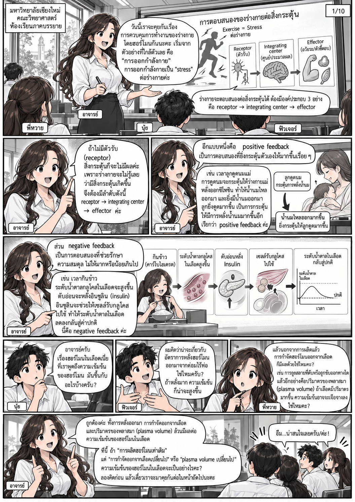
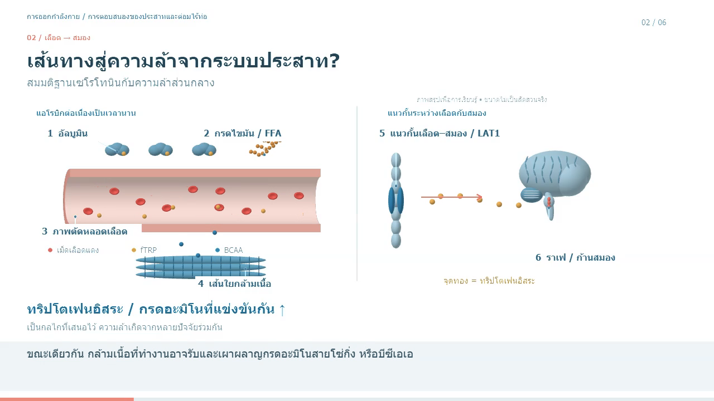

ระบบประสาท · ฮอร์โมน · การออกกำลังกาย
เข้าใจร่างกาย
ผ่านภาพและการเคลื่อนไหว
เลือกวิธีเรียนรู้ในจังหวะของคุณ
อ่านเรื่องราวในการ์ตูน หรือดูบทเรียนภาพเคลื่อนไหว

THAI COMIC01 / READอ่านตามลำดับหน้า
อ่านการ์ตูน
เรียนรู้ผ่านบทสนทนาในห้องเรียน
เรื่องฮอร์โมน พลังงาน และการออกกำลังกาย

4 MIN / WEBGL02 / WATCHไทย / English
ดูวิดีโอ
การตอบสนองของระบบประสาทและต่อมไร้ท่อ
พร้อมเสียงพากย์ คำบรรยาย และคำอธิบายโมเดล